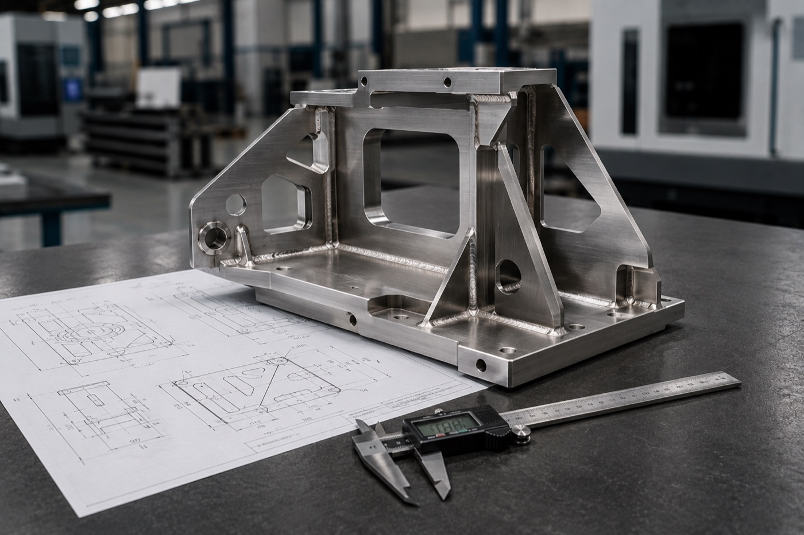
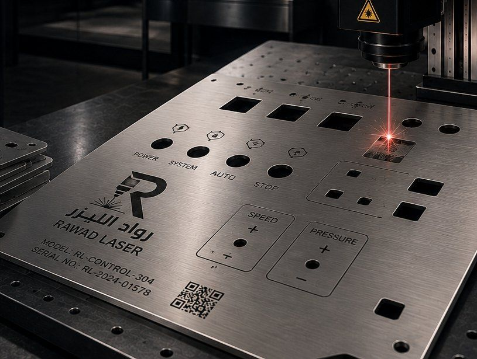
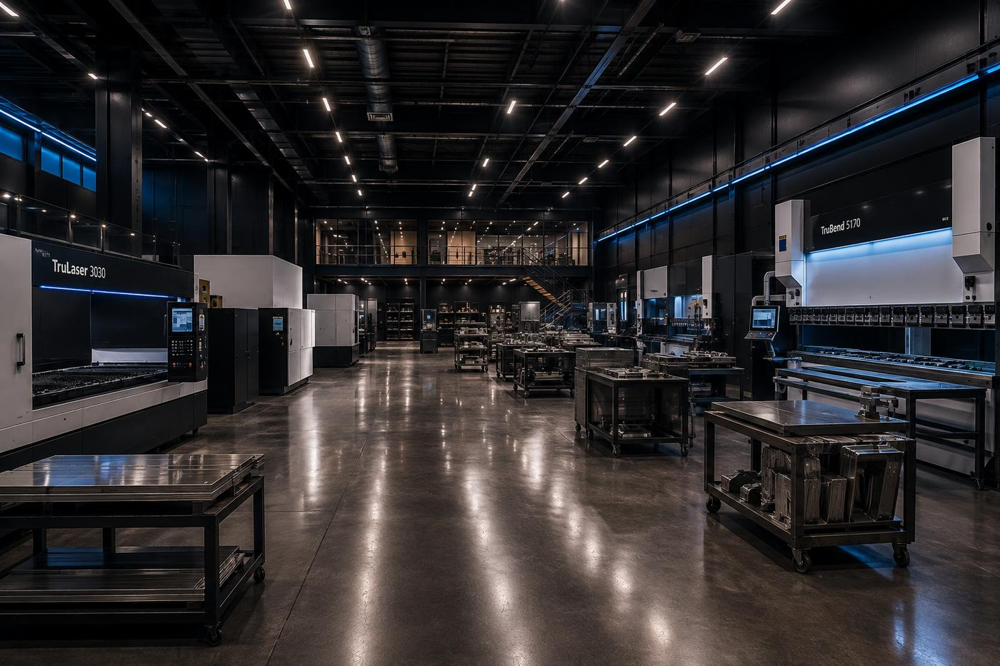

Mounting plates and brackets
Plates with bolt holes at exact positions matching the fixing points on the equipment or existing frame.
A production line stopped because of one small part with no market replacement? We manufacture it from your engineering drawing or from the failed part itself, with hole positions and centres held exactly — because a part off by one millimetre does not work.

The situation is familiar in every workshop and factory: a metal part cracks or wears out, the equipment stops, and the original supplier has either discontinued it or quotes weeks of lead time at a price out of proportion to the part. The downtime costs far more than the part itself.
In most cases you do not need the original part — you need a part that performs the same function at the same critical dimensions. That is what we produce: we take the failed part or its drawing, identify the dimensions that actually matter (hole positions, centres, contact faces), and manufacture a replacement that works in its place.
And often we can improve the part rather than just copy it: if the failure came from insufficient thickness or a metal unsuited to the environment, we suggest a heavier gauge or a corrosion-resistant metal so the replacement outlasts the original — a decision we put to you rather than take alone.
Plates with bolt holes at exact positions matching the fixing points on the equipment or existing frame.
Circular parts with a central bore and perimeter holes distributed precisely on a bolt circle.
Guides, tracks and guide plates — parts needing exact repeatability to work with the rest of the line.
Parts no longer produced, remade from the original to keep older equipment in service.
Custom-made solutionsEnclosures around moving parts, with ventilation and inspection openings and angles matching the existing frame.
The part number, code or a QR mark engraved on it so it is easy to identify in stock later.
Laser engraving on metalNot every dimension on a part is critical. Identifying the ones that are saves time and cost, and makes the part work first time.
| Dimension | Why it matters | What we ask you for |
|---|---|---|
| Hole centre positions | The most important dimension on most parts: if the centre shifts, the bolt will not enter regardless of diameter. | The centre-to-centre distances, or the original part so we can measure it ourselves. |
| Hole diameters | They set the bolt size and the clearance needed for movement or a fixed fit. | The bolt size used, or the required diameter if the drawing specifies it. |
| Thickness | It sets the part’s strength under load, and may be the original cause of failure if too light. | The original part’s thickness and a description of the load it carries. |
| Overall dimensions | Important for fitting into a defined space, and less critical if the part’s edges are free. | The outer size, and whether there is a tight space the part must not exceed. |
| Angles after bending | A single degree stops the part sitting flat or matching the frame. | The bend angles, or the old part so we can measure the actual angle. |
If you are unsure of the dimensions, send the part itself — measuring it here is more accurate than estimating over the phone, and it avoids a remake.

Control panels Ready to deliver
Ready to deliver
Production floorImages are visual samples illustrating the service.
Parts that wear out on a cycle, better held in stock than ordered at every breakdown.
Replacement parts for different customer machines, made fast to cut downtime.
Special fixings not available off the shelf, made to site dimensions so installation finishes on time.
Older or imported equipment with no local parts supply — we make the replacement locally.
Send the part or clear photos with dimensions; we identify what is missing in one or two questions.
We measure and define what must be exact and what can be approximate — which saves you cost.
Laser cutting, then bending or welding if the part needs it, with dimensional checks between stages.
We compare the new part against the original or the drawing before delivery, confirming hole positions.
Production starting within 6 hours of approval, because a spare is usually urgent, not deferrable.
We measure the original ourselves rather than relying on estimates, confirming critical dimensions before production.
If the failure came from a weak material we propose a better metal or gauge — your call.
We keep the part file, so the next order starts at production rather than measurement and setup.
The stage where holes and profiles are produced to drawing accuracy.
Open the pageFor parts needing bends or folded legs to match an existing frame.
Open the pageProduction part batches, data plates and asset tags for industrial-city factories and workshops.
Open the pageFrom a photo with dimensions: yes. From a photo alone: no, because an image gives no reliable scale. Add a ruler or tape in the shot, or send the main dimensions and hole diameters and we can start.
The dimensions will match the critical ones; quality depends on the metal chosen. In many cases we make the part in a better metal or gauge than the original if the failure points to a weak material — and we explain the option and its cost before production.
Laser cutting produces flat, bent and welded parts. Parts requiring turning, milling, threads or pockets at varying depths are different processes — send the drawing and we will tell you plainly if it falls outside what we do.
Yes — it is one of our most common requests. Send the part or photos with dimensions and tell us how urgent it is, and we will give you a realistic date rather than an optimistic one we cannot keep.
Attach clear photos with dimensions and hole sizes, and note which equipment the part serves and how urgent it is.
Send the part or photos with dimensions, and we will return a price and a realistic date to get your equipment running.